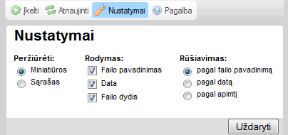

"Nustatym懦" mygtukas, esantis 寞ranki懦 juostoje, atveria "Nustatym懦 ", kur galite konfig奴ruoti CKFinder. 艩tai pavyzdys:

Visi nustatymai yra automati拧kai i拧saugojami naudojant nar拧ykl臈s "sausain臈lius". Sausain臈liai
Jei norite u啪verti nustatym懦 skydel寞, tiesiog spustel臈kite "U啪daryti" mygtuk膮, arba "Nustatymai"
Visi parametrai yra susij臋 su Fail懦 skydeliu. Jie yra naudojami informacijos vaizdavimui skydelyje kontroliuoti. Fail懦 valdymo skydelis
Nustato informacijos kiek寞 fail懦 skydelyje. 艩tai pateiktas pavyzdys nuo minimalaus galim懦 pasirinkim懦 iki maksimalaus:
|
|
|
Nustato, kokia tvarka yra r奴拧iuojami failai. R奴拧iavimas gali b奴ti nustatomas pagal ab臈c臈l臋, failo pavadinim膮, dat膮 pagal fail懦 naujum膮, arba netgi pagal failo apimt寞.